Next: Face-to-Face Penalty Contact Up: Node-to-Face Penalty Contact Previous: Normal contact stiffness Contents
To find the tangent contact stiffness matrix, please look at Figure
133, part a). At
the beginning of a concrete time increment, characterized by time 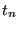 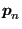 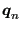 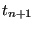 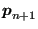 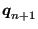 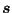
Here,
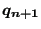
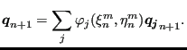 |
(275) |
Since (the dependency of 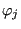 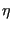 and
and
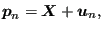 |
(276) |
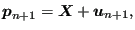 |
(277) |
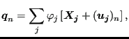 |
(278) |
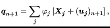 |
(279) |
this also amounts to
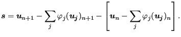 |
(280) |
Notice that the local coordinates take the values of time (the superscript m denotes iteration m within the increment). The differential tangential displacement now amounts to:
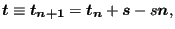 |
(281) |
where
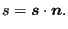 |
(282) |
Derivation w.r.t.
 satisfies (straightforward
differentiation):
satisfies (straightforward
differentiation):
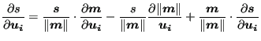 |
(284) |
and
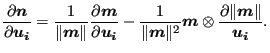 |
(285) |
The derivative of
w.r.t.
 can be obtained
from the derivative of
can be obtained
from the derivative of
 w.r.t.
w.r.t.
 by keeping
by keeping
 and fixed (notice that the derivative is taken at ,
consequently, all derivatives of values at time disappear):
and fixed (notice that the derivative is taken at ,
consequently, all derivatives of values at time disappear):
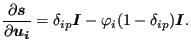 |
(286) |
Physically, the tangential contact equations are as follows (written at the location of slave node p):
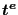
and slip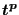
:
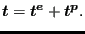 |
(287) |
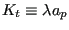
, where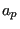
the representative slave area for the slave node at stake) defining the tangential force exerted by the slave side on the master side at the location of slave node p:
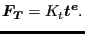 |
(288) |
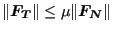 |
(289) |
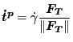 |
(290) |
First, a difference form of the additive decomposition of the differential tangential displacement is derived. Starting from
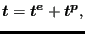 |
(291) |
one obtains after taking the time derivative:
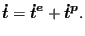 |
(292) |
Substituting the slip evolution equation leads to:
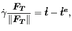 |
(293) |
and after multiplying with 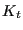
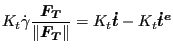 |
(294) |
Writing this equation at , using finite differences (backwards Euler), one gets:
where
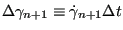 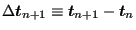
Now, the radial return algorithm will be described to solve the governing
equations. Assume that the solution at time is known,
i.e.
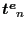 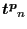 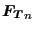 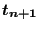 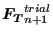 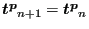
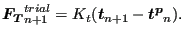 |
(296) |
Now, this can also be written as:
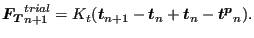 |
(297) |
or
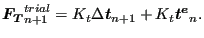 |
(298) |
Using Equation (295) this is equivalent to:
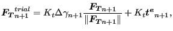 |
(299) |
or
From the last equation one obtains
| (301) |
and, since the terms in brackets in Equation (300) are both positive:
The only equation which is left to be satisfied is the Coulomb slip limit. Two possibilities arise:
In that case the Coulomb slip limit is satisfied and we have found the solution:
| (303) |
and
No extra slip occurred from to .
In that case we project the solution back onto the slip surface and
require
. Using Equation (302) this leads to the
following expression for the increase of the consistency parameter  :
:
| (305) |
which can be used to update (by using the slip evolution equation):
| (306) |
The tangential force can be written as:
| (307) |
Now since
| (308) |
and
| (309) |
where
 and
and
 are vectors, one obtains
for the derivative of the tangential force:
are vectors, one obtains
for the derivative of the tangential force:
| (310) |
where
| (311) |
One finally arrives at (using Equation (304)
All quantities on the right hand side are known now (cf. Equation (259) and Equation (283)).
In CalculiX, for node-to-face contact, Equation (274) is reformulated and simplified. It is reformulated in the sense that is assumed to be the projection of and is written as (cf. Figure 133, part b))
| (313) |
Part a) and part b) of the figure are really equivalent, they just represent the same facts from a different point of view. In part a) the projection on the master surface is performed at time , and the differential displacement is calculated at time , in part b) the projection is done at time and the differential displacement is calculated at time . Now, the actual position can be written as the sum of the undeformed position and the deformation, i.e. and leading to:
| (314) |
Since the undeformed position is no function of time it drops out:
| (315) |
or:
| (316) | ||
| (317) |
Now, the last two terms are dropped, i.e. it is assumed that the differential deformation at time between positions and is neglegible compared to the differential motion from to . Then the expression for simplifies to:
| (318) |
and the only quantity to be stored is the difference in deformation between
 and
and
 at the actual time and at the time of
the beginning of the increment.
at the actual time and at the time of
the beginning of the increment.